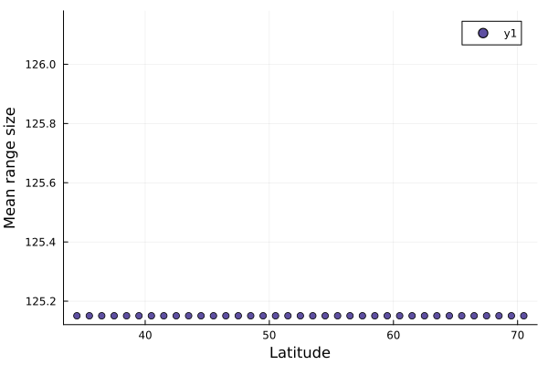
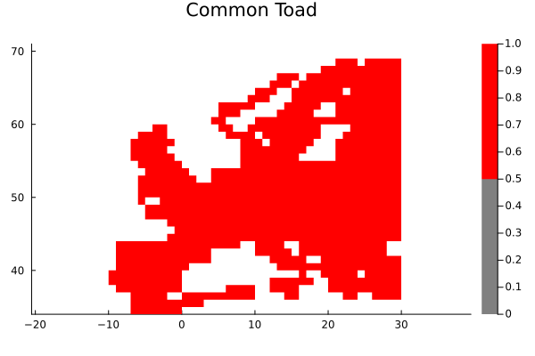

Groups and subsets
One of the most powerful ideas in SpatialEcology is that it lets you create views into all objects (most importantly ComMatrix and Assemblage) based on a subset of species or sites. The object will drop unused species or sites.
Let's say for instance we want to calculate the average range size for each latitudinal band for the dataset of European amphibians.
First, we load the data:
using SpatialEcology, Plots, CSV, DataFrames, Statistics
ENV["GKSwstype"]="nul"
amphdata = CSV.read(joinpath(dirname(pathof(SpatialEcology)), "..", "data", "amph_Europe.csv"), DataFrame)
amph = Assemblage(amphdata[!, 4:end],amphdata[!, 1:3], sitecolumns = false);Assemblage with 73 species in 1010 sites
Species names:
Salamandra_salamandra, _Calotriton_asper, _Calotriton_arnoldi...Chioglossa_lusitanica, Pleurodeles_waltl
Site names:
1, 2, 3...1009, 1010
And let's add the rangesizes of each species to the dataset
addtraits!(amph, occupancy(amph), :rangesize)73-element Vector{Int64}:
353
11
1
5
2
86
35
419
95
39
⋮
17
100
31
3
7
24
6
16
59Then let's get all unique latitudes
latitudes = unique(coordinates(amph)[:, 2])37-element Vector{Float64}:
46.5
47.5
37.5
38.5
39.5
43.5
44.5
45.5
40.5
36.5
⋮
64.5
65.5
66.5
67.5
35.5
34.5
68.5
69.5
70.5We can use a simple to loop over all the latitudes, generate a relevant subset and calculate the mean rangesize
latitude_range = zeros(size(latitudes))
for (i, lat) in enumerate(latitudes)
sites = findall(==(lat), coordinates(amph)[:,2])
subset = view(amph, sites = sites)
latitude_range[i] = mean(subset[:rangesize])
end
scatter(latitudes, latitude_range, xlab = "Latitude", ylab = "Mean range size")
Subsetting and sampling over a factor is common enough that there is a specialized syntax for this, groupspecies and groupsites. All of the above can be expressed by grouping the assemblage over the second coordinate (latitude):
latitudinal_assemblages = groupsites(amph, coordinates(amph)[:,2], dropspecies = true)
latitude_range = [mean(lat[:rangesize]) for lat in latitudinal_assemblages]37-element Vector{Float64}:
255.83333333333334
217.55555555555554
212.57692307692307
190.06060606060606
169.3421052631579
150.88636363636363
164.04255319148936
170.75555555555556
169.6595744680851
178.40425531914894
⋮
628.0
628.0
628.0
680.25
680.25
680.25
673.3333333333334
740.0
740.0You can also use subsetting to plot a single species:
spec = view(amph, species = ["_Bufo_bufo"])
plot(spec, title = "Common Toad", showempty = true, c = cgrad([:grey, :red], categorical = true))
#Todo make this work without wrapping sp
Note that getindex ([]) will create a view by default - to create a new Assemblage object you can use copy.
Index
SpatialEcology.asquantilesSpatialEcology.asquantiles!SpatialEcology.coarsenSpatialEcology.dispersionfieldSpatialEcology.groupsitesSpatialEcology.groupspeciesStatsAPI.pairwise
API
SpatialEcology.groupspecies — Function
groupspecies(a::EcoBase.AbstractAssemblage, s::Symbol; kwargs...)SpatialEcology.groupsites — Function
groupsites(a::EcoBase.AbstractAssemblage, s::Symbol; kwargs...)SpatialEcology.coarsen — Function
coarsen(object, grid [, fun])Coarsen object (either an Assemblage or Locations type) to grid. If object is an Assemblage{PointData} this will grid all points and return an Assemblage{GridData}. grid can be a GridTopology or a single Integer signifying the coarsening factor for already gridded data, the cellsize for point data. fun is an optional function specifying how to lump occurrences. If not specified the default function is any for Boolean Assemblages and sum for Integer ones.
coarsen(asm::Assemblage{Bool, …RasterData…}, factor; fun = maximum)Coarsen a raster-backed assemblage by factor (an Integer, or a (x, y) tuple). Each species is occupied in a coarse cell when fun over the covered fine cells is true — the default maximum means any fine cell, the presence-absence analogue of the grid coarsen. The coarse domain keeps any fine cell that was in the original domain. Species traits are carried over.
Utilities
SpatialEcology.dispersionfield — Function
dispersionfield(asm, site)StatsAPI.pairwise — Function
pairwise(f, x[, y];
symmetric::Bool=false, skipmissing::Symbol=:none)Return a matrix holding the result of applying f to all possible pairs of entries in iterators x and y. Rows correspond to entries in x and columns to entries in y. If y is omitted then a square matrix crossing x with itself is returned.
As a special case, if f is cor, diagonal cells for which entries from x and y are identical (according to ===) are set to one even in the presence missing, NaN or Inf entries.
Keyword arguments
symmetric::Bool=false: Iftrue,fis only called to compute for the lower triangle of the matrix, and these values are copied to fill the upper triangle. Only allowed whenyis omitted. Defaults totruewhenfiscororcov.skipmissing::Symbol=:none: If:none(the default), missing values in inputs are passed tofwithout any modification. Use:pairwiseto skip entries with amissingvalue in either of the two vectors passed toffor a given pair of vectors inxandy. Use:listwiseto skip entries with amissingvalue in any of the vectors inxory; note that this might drop a large part of entries. Only allowed when entries inxandyare vectors.
Examples
julia> using StatsBase, Statistics
julia> x = [1 3 7
2 5 6
3 8 4
4 6 2];
julia> pairwise(cor, eachcol(x))
3×3 Matrix{Float64}:
1.0 0.744208 -0.989778
0.744208 1.0 -0.68605
-0.989778 -0.68605 1.0
julia> y = [1 3 missing
2 5 6
3 missing 2
4 6 2];
julia> pairwise(cor, eachcol(y), skipmissing=:pairwise)
3×3 Matrix{Float64}:
1.0 0.928571 -0.866025
0.928571 1.0 -1.0
-0.866025 -1.0 1.0pairwise(metric::PreMetric, a::AbstractMatrix, b::AbstractMatrix=a; dims)Compute distances between each pair of rows (if dims=1) or columns (if dims=2) in a and b according to distance metric. If a single matrix a is provided, compute distances between its rows or columns.
a and b must have the same numbers of columns if dims=1, or of rows if dims=2.
pairwise(metric::PreMetric, a, b=a)Compute distances between each element of collection a and each element of collection b according to distance metric. If a single iterable a is provided, compute distances between its elements.
SpatialEcology.asquantiles — Function
asquantiles(x, n)SpatialEcology.asquantiles! — Function
asquantiles!(x, n)